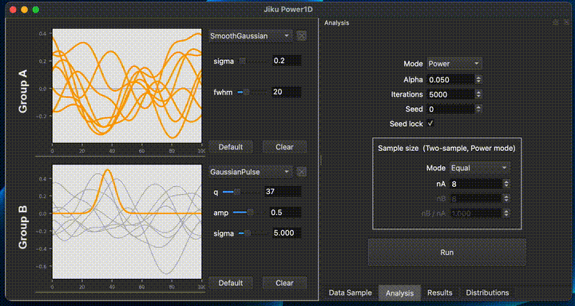

Drag on drop CSV files
Automate post hoc power analysis being a drag away.
Statistical power analysis...
for one-dimensional data
Power1D is a tool to conduct power analysis on continuous 1D datasets (time series, motion curves, or biomechanical signals). Ease of use, sample size estimation, and effect size visualization.


Automate post hoc power analysis being a drag away.

Run to swiftly plan your data collection and experiments.

Robustly power 1d data collection.